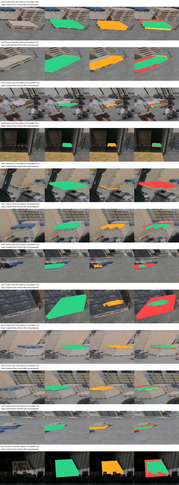

LabelAgent / Pallet Conflict Coverage
托盘冲突路由覆盖审计
3 个序列、4 路相机；检查触发与安全跳过是否一致。
离线验证 · 未部署
跨视角图像12
安全跳过10
冲突触发2
误触发 / 漏触发0 / 0
12 视角定位结果
绿色代表无需拆分；红色代表进入深度、LiDAR 与时序候选路由。

逐视角路由清单
| 序列 | 相机 | 帧 ID | 目标 | 最大相邻框重叠 | 路由 |
|---|---|---|---|---|---|
| 010 | camera0 | 1789899951882467655 | 7 | 83.95% | 3 个候选 |
| 010 | camera1 | 1789899951882467655 | 6 | 0.00% | 安全跳过 |
| 010 | camera2 | 1789899951882467655 | 22 | 0.00% | 安全跳过 |
| 010 | camera3 | 1789899951882467655 | 2 | 0.00% | 安全跳过 |
| 011 | camera0 | 1789900388815700364 | 12 | 0.00% | 安全跳过 |
| 011 | camera1 | 1789900388815700364 | 15 | 46.12% | 2 个候选 |
| 011 | camera2 | 1789900388815700364 | 24 | 0.00% | 安全跳过 |
| 011 | camera3 | 1789900388815700364 | 5 | 0.00% | 安全跳过 |
| 012 | camera0 | 1789900488815784655 | 12 | 0.00% | 安全跳过 |
| 012 | camera1 | 1789900488815784655 | 12 | 0.00% | 安全跳过 |
| 012 | camera2 | 1789900488815784655 | 35 | 0.00% | 安全跳过 |
| 012 | camera3 | 1789900488815784655 | 29 | 0.00% | 安全跳过 |
安全边界：安全跳过只表示本轮 3D 投影冲突门未触发；不等于人工像素真值。触发项也只是待复核候选，不会自动写入训练集或正式工作台。